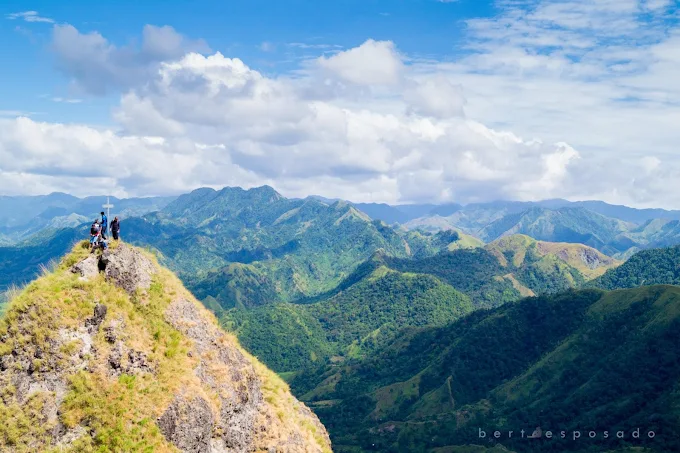
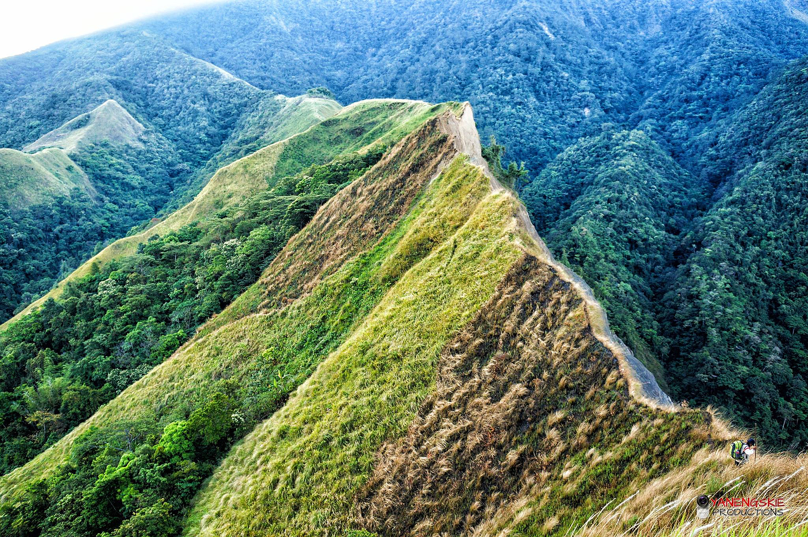
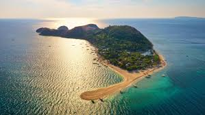
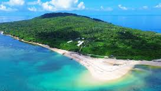
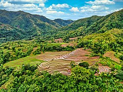
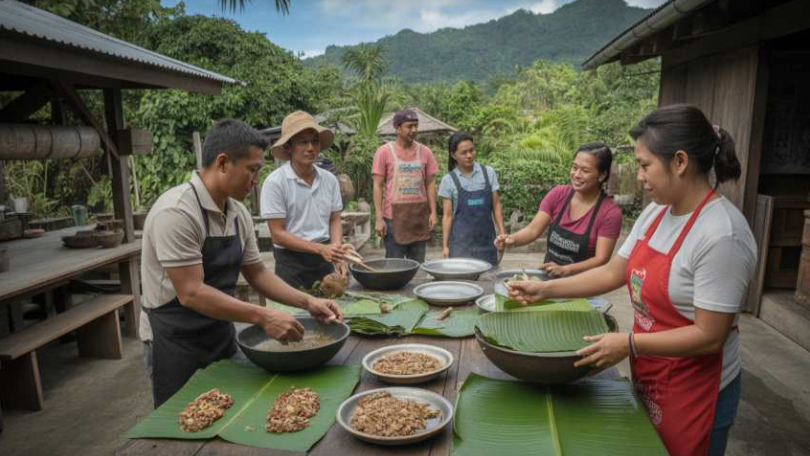
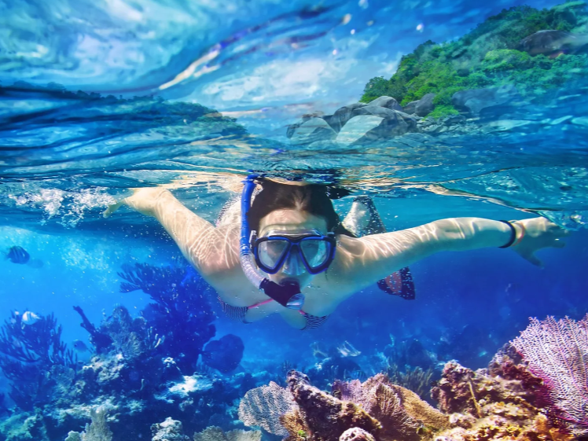
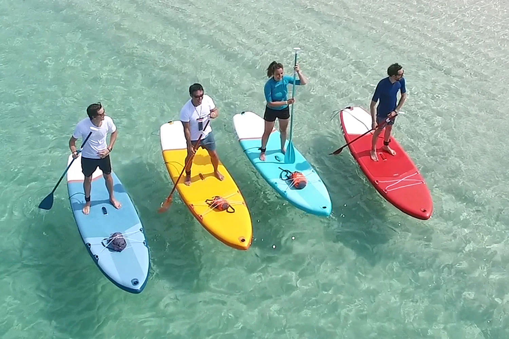
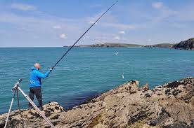
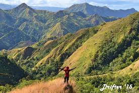

Adventure Activities
Step into a world of excitement and natural wonders!
For thrill-seekers and outdoor enthusiasts, Antique is a playground of adventure. Hike through the lush trails of Mount Madja-as, the highest peak in Panay, where panoramic views reward every step, or explore Mount Igcoron for a challenging trek surrounded by untouched forests and wildlife. The province’s rivers and waterfalls, like Mato, Paliwan, and Bugang, offer opportunities for swimming, kayaking, and even cliff diving in crystal-clear waters. Coastal adventures abound as well—snorkel in vibrant coral reefs off Mararison Island, try island hopping to hidden beaches, or dive into the marine wonders surrounding Nogas Island.
For those seeking a mix of adrenaline and culture, local festivals and community activities provide a dynamic experience where adventure meets tradition. Antique’s rugged landscapes, pristine waters, and scenic trails make it a haven for anyone ready to step off the beaten path and embrace the province’s natural beauty. Every activity is a chance to explore, challenge yourself, and create unforgettable memories in one of the Philippines’ most diverse and unspoiled destinations.
ADVENTURE CATALOGUE
Mountain Trekking & Hiking

Mount Madja-as (Culasi / Barbaza)
Highest peak in Panay Island (2,117 meters).
Activities: Hiking, camping, sunrise/sunset viewing, birdwatching
Highlights: Cloud forests, panoramic views, endemic wildlife

Mount Igcoron (Patnongon / San Remigio)
Rugged trails for intermediate hikers.
Activities: Trekking, nature photography, camping
Highlights: Waterfalls, mossy forest, serene streams

Mount Nangtud (Libertad / Sibalom area)
Lesser-known trail for adventure seekers.
Activities: Backpacking, wildlife observation
Highlights: Pristine forest paths and rare flora
Island & Coastal Adventures

Mararison Island (Culasi)
Activities: Island hopping, snorkeling, swimming, beach camping
Highlights: White sandy beaches, crystal-clear waters, vibrant marine life

Nogas Island (Culasi)
Activities: Scuba diving, snorkeling, coastal trekking
Highlights: Coral reefs, rich underwater biodiversity

Batbatan Island (Culasi)
Activities: Diving, marine exploration
Highlights: Well-preserved coral gardens and tropical fish
Cultural & Festival Adventures

Local Festivals (across Antique towns)
Activities: Traditional dances, music, community games
Highlights: Antiqueño heritage, colorful costumes, cultural immersion

Heritage Trails & Historical Hikes
Activities: Visiting old churches, monuments, heritage markers
Highlights: Malandog Marker, Dr. Jose Rizal Monuments, centuries-old churches

Community Craft Workshops
Activities: Weaving, pottery, local art-making
Highlights: Learn from local artisans, hands-on cultural experience
Marine & Water Sports

Snorkeling & Diving (Mararison, Nogas, Batbatan Islands)
Activities: Snorkeling, scuba diving, underwater photography
Highlights: Coral gardens, tropical fish, sea turtles

Kayaking & Paddleboarding (Bugang River, Culasi coast)
Activities: River paddling, coastal exploration, eco-tours
Highlights: Calm waters, mangrove ecosystems, peaceful surroundings

Coastal Fishing Trips (Pandan & Culasi)
Activities: Boat fishing, line fishing, traditional methods
Highlights: Scenic coastlines, local fishing culture, fresh catch experiences
Camping & Eco-Adventure

Beach Camping (Mararison, Nogas, Hurao-Hurao Islands)
Activities: Overnight camping, bonfires, stargazing
Highlights: Sunset views, tranquil beaches, sound of waves at night

Forest Camping & Trekking (Mount Madja-as, Mount Igcoron)
Activities: Backpacking, nature immersion, team-building activities
Highlights: Cool mountain air, forest biodiversity, adventure challenge

Eco-Lodge Stays (near rivers and waterfalls)
Activities: Guided hikes, birdwatching, forest exploration
Highlights: Sustainable tourism, close-to-nature experience, wildlife observation